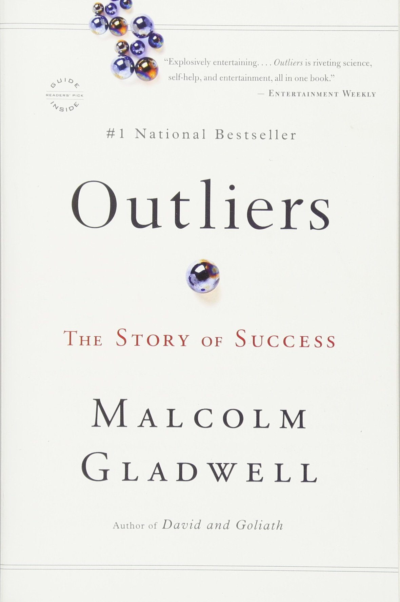
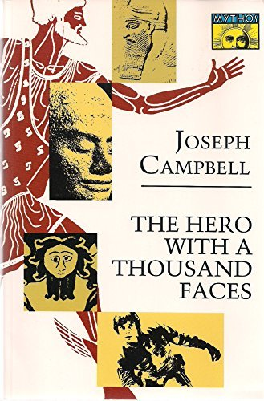
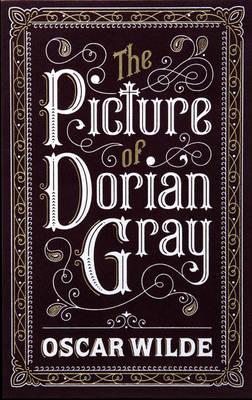
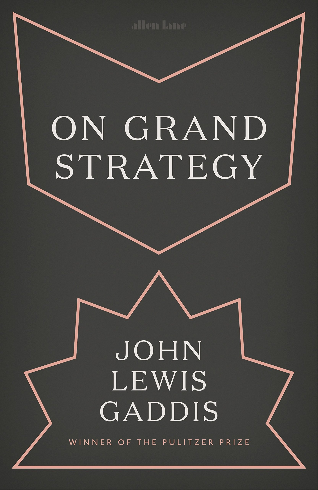
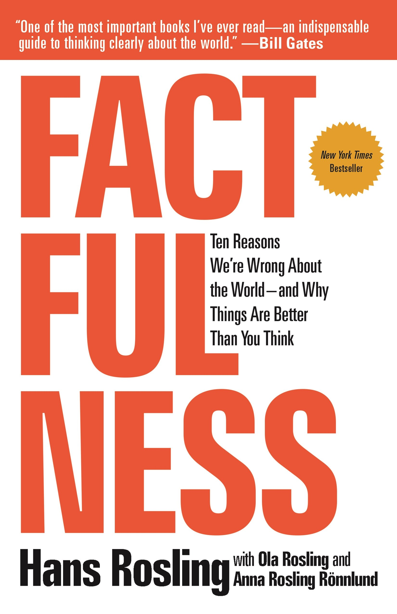
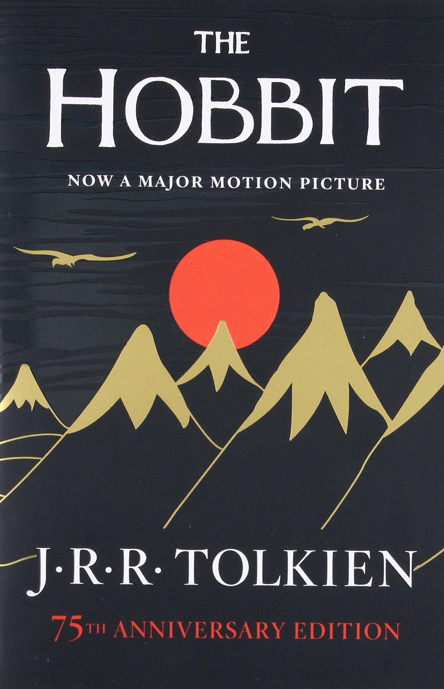
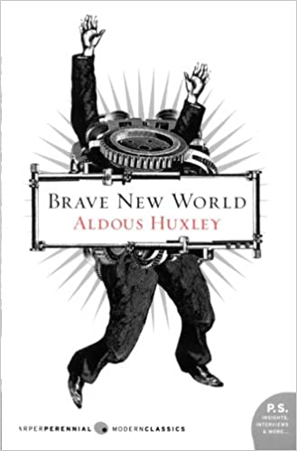
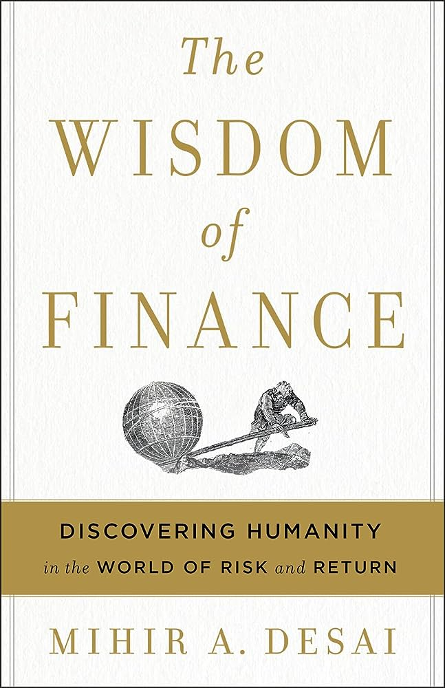
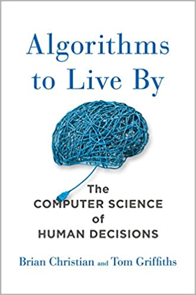

About
I am an analyst that loves every aspect of working with data. I have experience building NLP products, data pipelines, and machine learning systems across the financial sector and the U.S. Department of Defense. Outside of data science, I spend time working with kids and peers who stutter, researching economics, mountain biking, and reading. I graduated from UT Austin with a Master's in Artificial Intelligence and hold degrees in Computer Science and Economics from Wofford College.
Pastimes
- Mountain Biking
- Chess
- Ceramics
- Documentary-Watching — I will watch one on literally anything.
- Stuttering Community
The Bookshelf
Books I like.

Outliers
The Hero with a Thousand Faces
The Picture of Dorian Gray The Road to Character
On Grand Strategy
Factfulness Prisoners of Geography The Brothers Karamazov
The Hobbit Tales on the Town
Brave New World Mr. Penumbra's 24-Hour Bookstore The Lost Art of Scripture
The Wisdom of Finance
Algorithms to Live By You Are What You Love The Denial of Death Eat This Book